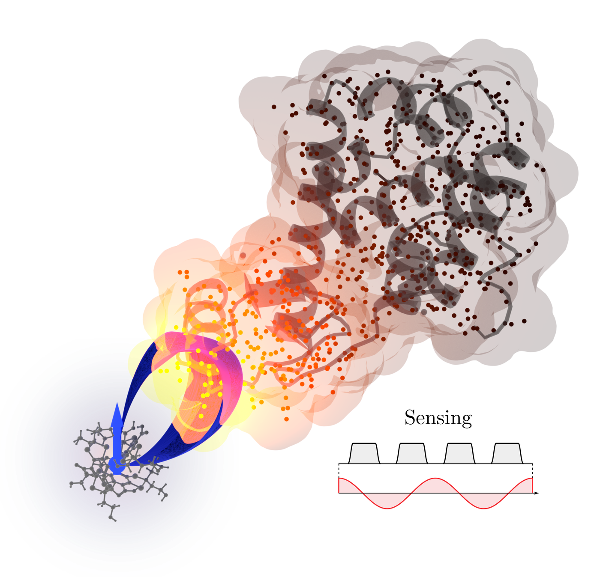
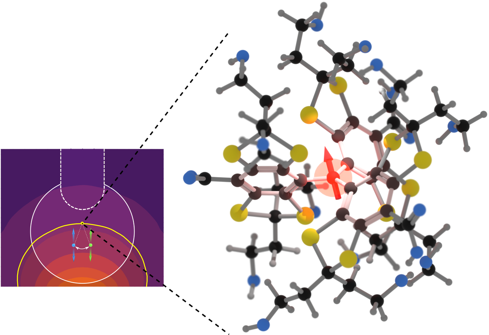
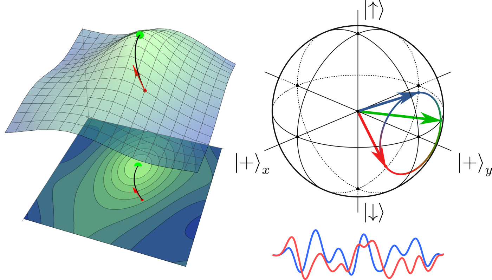
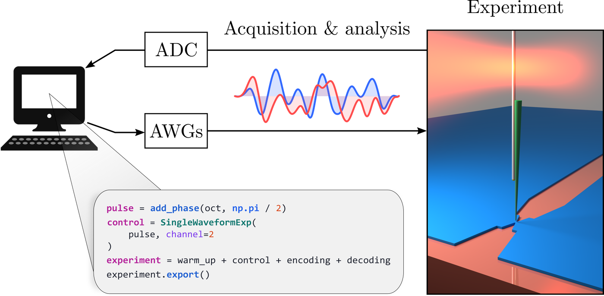
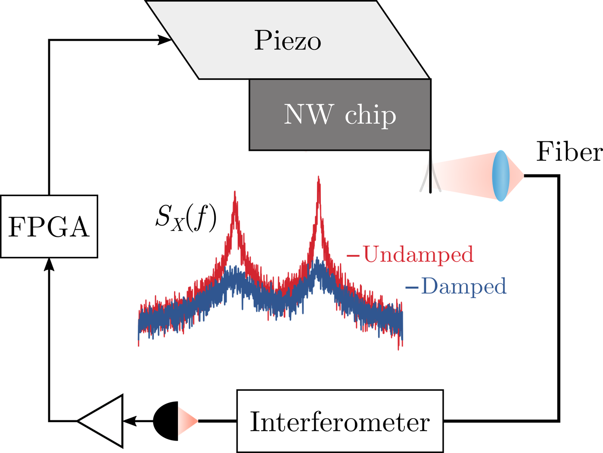

Engineering Quantum Dynamics
My research focuses on developing quantum-control methods and experimental tools to enable new measurement capabilities, from molecular-spin quantum sensing to atomic-scale measurements of spin structure and dynamics.
Molecular-Spin Quantum Sensing
Interactions among molecular electron spins limit coherence and the duration of magnetic-field measurements. I developed a dynamical-decoupling sequence that suppresses these interactions while preserving sensitivity to oscillating magnetic fields. This extended coherence times by a factor of approximately 60 relative to Hahn echo, enabling nanotesla-scale sensing and spectroscopy of nearby nuclear-spin ensembles.
These results established SQUINT, a quantum-sensing platform combining molecular electron spins, nanomechanical readout, and high-fidelity quantum control.

Atomic-Scale Magnetic Resonance Scattering
We combined dynamical decoupling with strong magnetic-field gradients to encode spatial modulations with angstrom-scale wavelengths in nuclear-spin ensembles. These modulations enabled magnetic resonance diffraction measurements of nanoscale displacements with picometer precision.
In subsequent experiments, we applied similar spatial encoding techniques to an ensemble of approximately 40 million nuclear spins, probing dipolar spin transport from the hydrodynamic regime down to the lattice spacing.

Nanoscale Dynamic Nuclear Polarization
Dynamic nuclear polarization enhances nuclear-spin detection sensitivity by transferring polarization from electron spins to nearby nuclei. We developed and experimentally demonstrated robust polarization-transfer protocols for nanoscale magnetic resonance, achieving a 200-fold reduction in averaging time.

Robust Quantum Control
Variations in control-field amplitude, resonance offsets, and spin–spin interactions can degrade the performance of quantum operations. I developed and experimentally validated robust adiabatic pulses, and co-developed numerical methods for optimizing control waveforms in the presence of these imperfections and hardware constraints.
These methods were implemented experimentally and became standard tools for nanoscale magnetic resonance measurements across the Budakian Lab.

Experimental Infrastructure
Experiment Control & Automation Infrastructure

I led the development of AWGMax, a Python library integrating experiment definition, waveform generation, simulation, validation, and logging. Together with interfaces to LabVIEW-based hardware-control software, it provides a unified workflow for experiments on nanoscale spin systems. AWGMax became standard experimental infrastructure across the Budakian Lab.
Feedback Cooling of Nanomechanical Resonators

I implemented a linear-quadratic-Gaussian feedback controller for cooling mechanical modes of silicon-nanowire oscillators, incorporating measured piezo-actuator transfer functions and system delays. It was subsequently adopted for routine feedback cooling in experiments across the Budakian Lab.